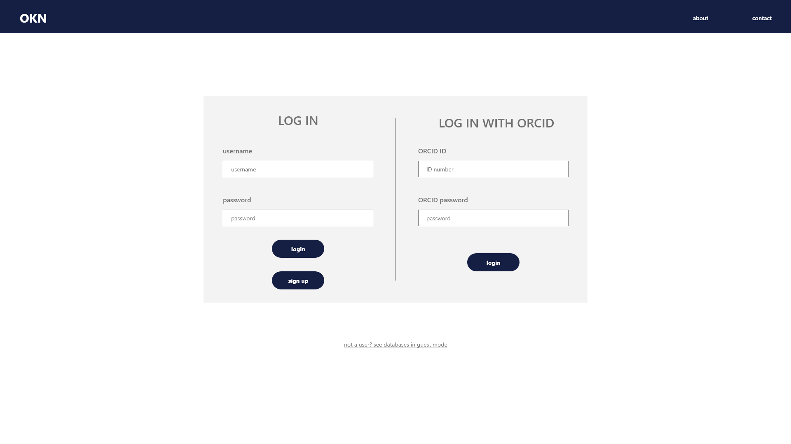
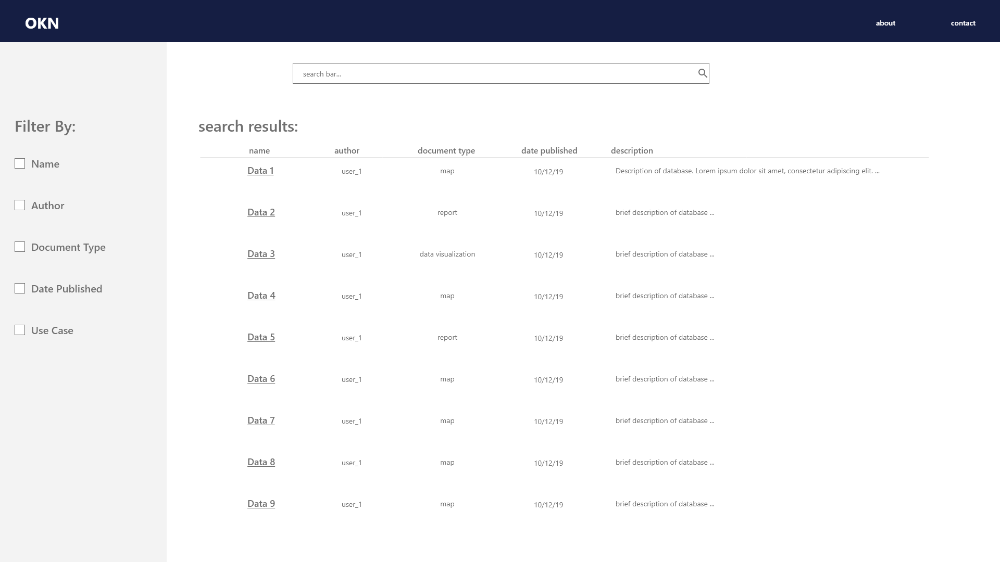
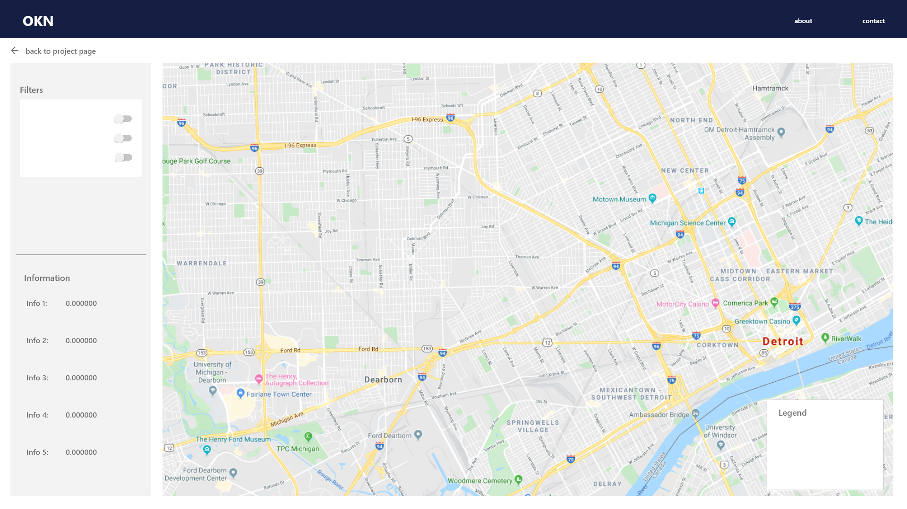
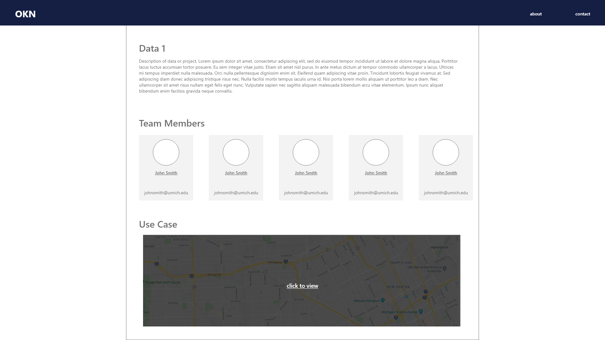
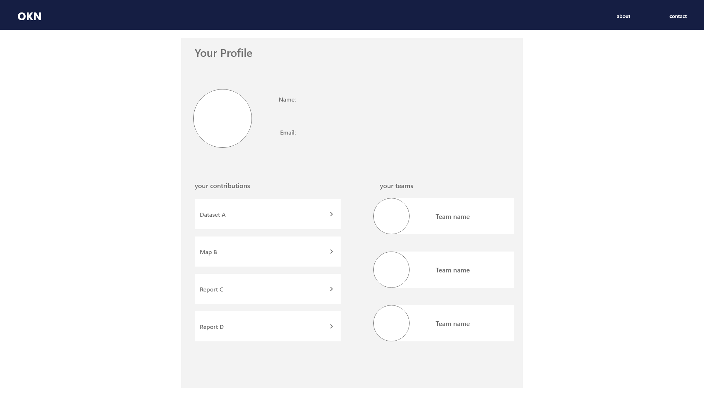
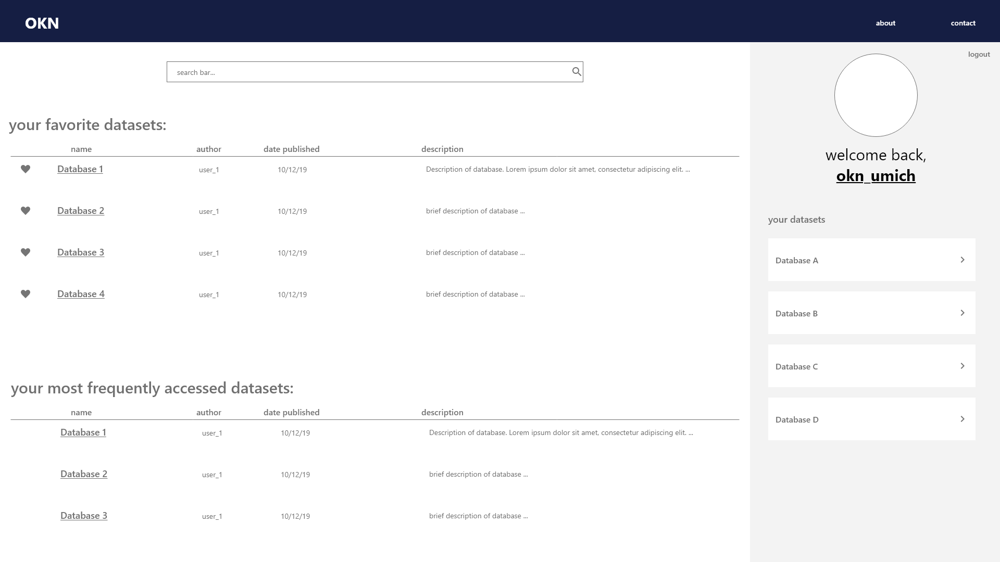

transportation open knowledge network (okn)
fall 2019/ winter 2020 - ui/ux design
designs

Login page mimics other login pages and includes login and sign up buttons. Can still access navigation bar options (about, contact) which should be the same for public and private. Users can log in with ORCID details.

Includes filter options to refine search. Ideally, there is an advanced search interface as well.

Map (or data visualization) with a sidebar for filter toggles and auto-populated information. This page includes a back button which takes users back to the Use-Case’s main informational page (shows authors, abstract about data, etc.)

Metadata. Abstract (extracted if the result is a report or article) about the data, an overview of the team members involved (as well as links to their profiles), and a preview of the data visualization, map, or report. Page can be expanded to include references made by the project as well as other projects that referenced it.

Base informational profile, list of uploads, list of teams. Fields like name and email should auto-import if they’re being derived from ORCID.

Kept this base design similar to Amundsen’s design, but offered a way for users to also see their own datasets too. Base interface organization prioritizes user preference and activity.